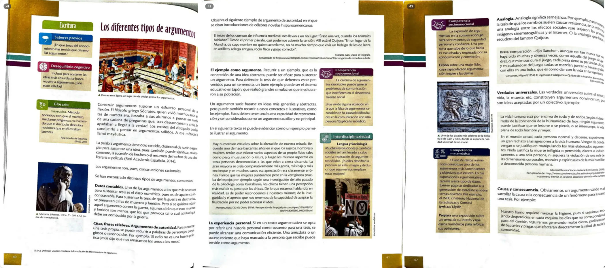

Datos contables: Según una encuesta local, las familias gastan un [ ]% menos de su presupuesto anual en ropa escolar…
Citas, frases célebres. Argumentos de autoridad: Como afirma la pedagogía moderna, "el uniforme escolar es una herramienta igualadora…"
El ejemplo como argumento: Pensemos en lo ocurrido en el colegio de nuestra parroquia vecina…
La experiencia personal: En mis años trabajando en este colegio fiscal…
Analogía: Así como el Delfín de Manta usa su uniforme en la cancha…
Causa y consecuencia: Si establecemos la obligación diaria del uniforme…
Datos contables: Según una encuesta local, las familias gastan un [ ]% menos de su presupuesto anual en ropa escolar cuando se exige uniforme todos los días. Mantener esta medida protege la economía de los hogares de Manta.